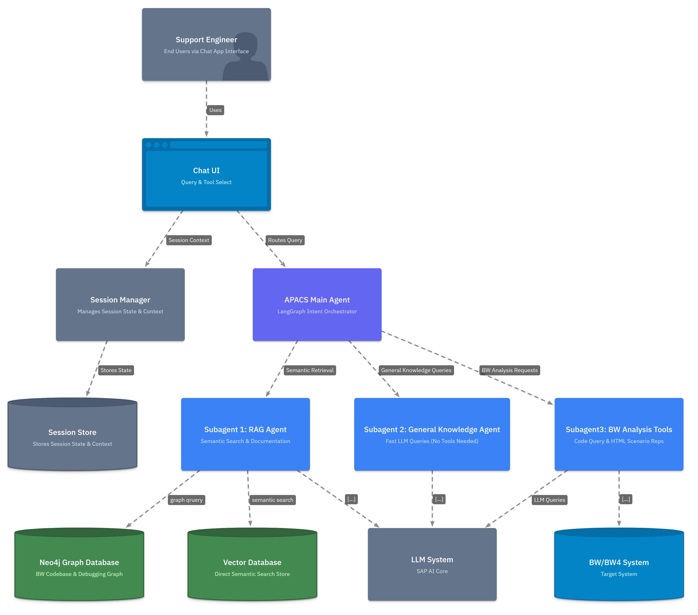
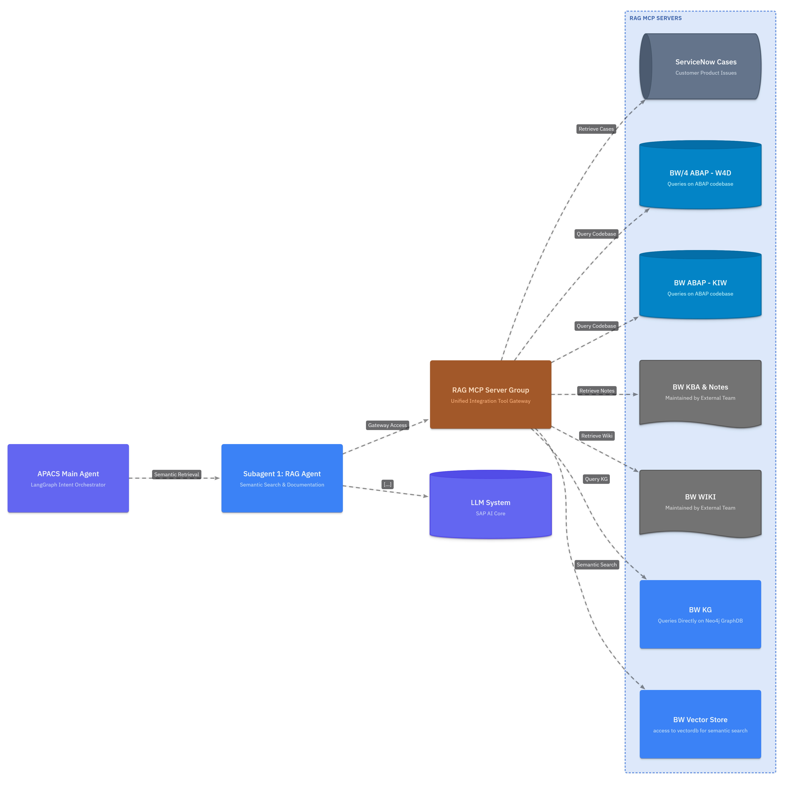
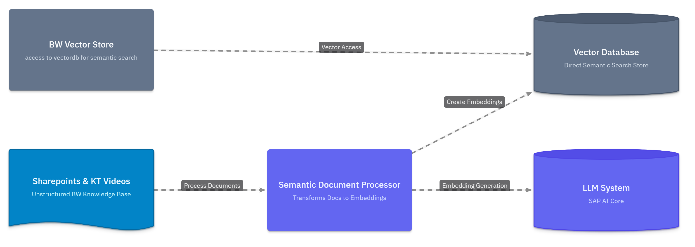
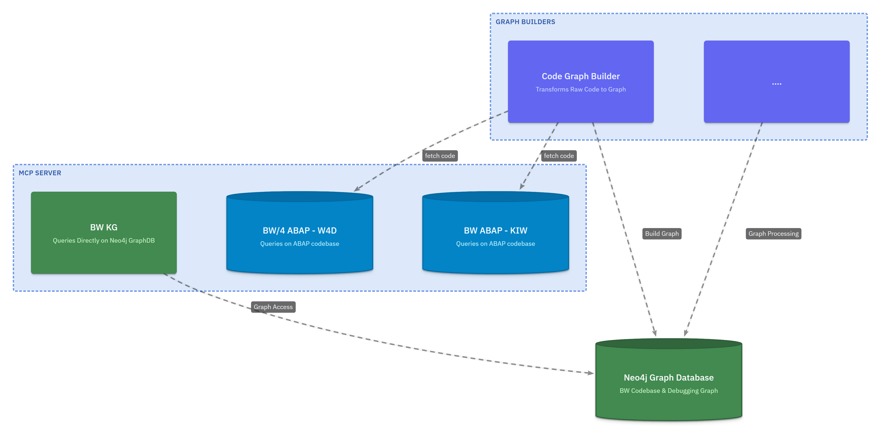
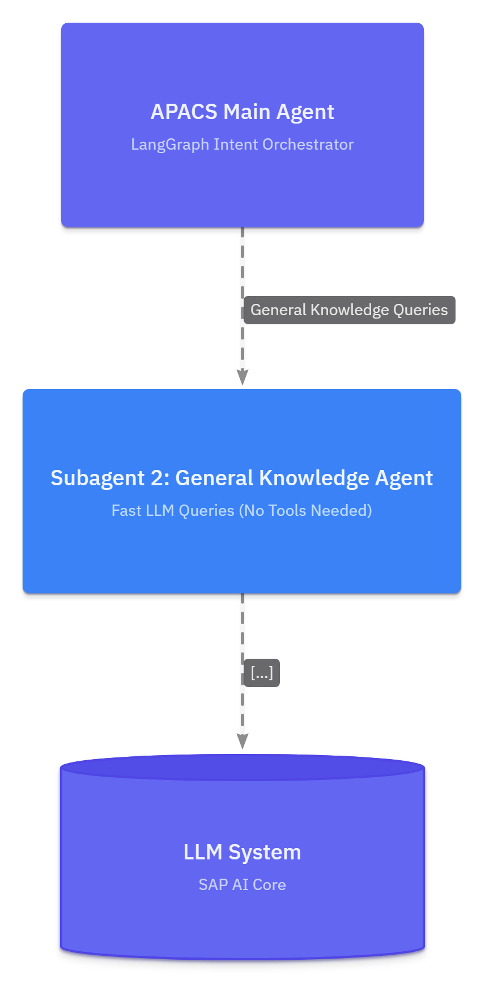
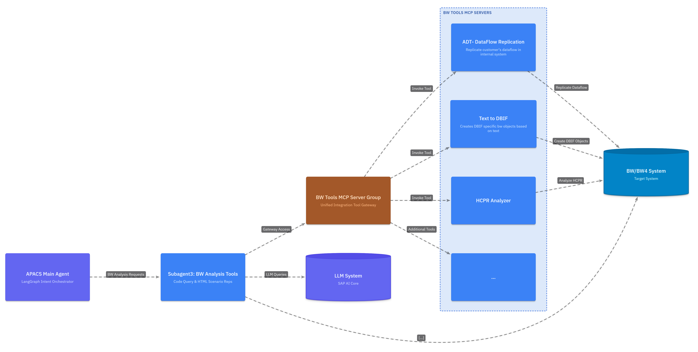

APACS Architecture Overview
The APACS architecture is designed to orchestrate complex LangGraph intents, manage session memory, and interact deeply with SAP BW environments.
1. Master Architecture
This view provides the high-level boundaries of the APACS AI Platform, the target Managed Systems (SAP AI Core, BW/BW4), and the end-user interaction layer.

- Chat UI & Session Management: Handles user queries and maintains conversational state.
- APACS Main Agent: The LangGraph intent orchestrator routing to specialized subagents.
- Target Systems: Execution environments including GraphDB, Vector DBs, and the BW/BW4 system.
- Captures user input and retrieves context from the Session Store.
- The APACS Main Agent classifies intent and delegates tasks to either RAG, General Knowledge, or BW Analysis subagents.
2. RAG Agent
The dedicated semantic retrieval specialist responsible for grounding AI responses. It securely queries unstructured enterprise data—including SAP Notes, internal wikis, and historical ServiceNow cases—using the Vector Database to synthesize accurate, context-rich answers..

3. Subagents & RAG / External Systems
This view details how the RAG subagent interacts with unstructured data and MCP server groups.

- RAG Agent: Executes semantic searches using the Vector Database.
- RAG MCP Servers: Acts as a gateway to external enterprise knowledge.
- Semantic Document Processor: Ingests Sharepoint documents and KT videos to generate embeddings.
4. BW Knowledge Graph & ABAP Analysis
This segment highlights how raw ABAP code is transformed into queryable topologies.

- Code Graph Builder: Asynchronously fetches code from target systems (W4D, KIW) to build relationships in the Neo4j Graph Database.
5. Subagent 2: General Knowledge
A focused drill-down into the fast-path resolution agent.

- Answers queries which requires no tools, zero-shot inference directly against the LLM System (SAP AI Core).
6. Subagent 3: BW Analysis Tools
A focused drill-down into the diagnostic and execution modules.

- Utilizes the BW Tools MCP Server Group to execute complex operations.
- Tools include ADT DataFlow Replication, Text to DBIF, and HCPR Analyzer.